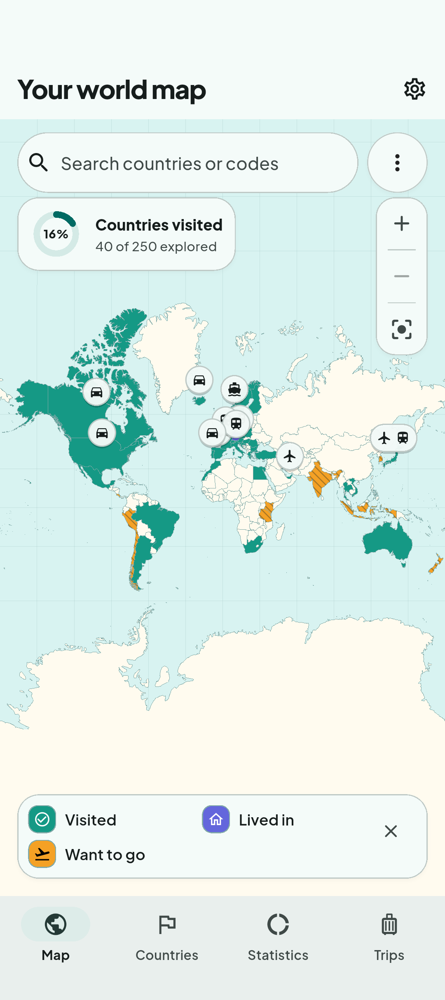
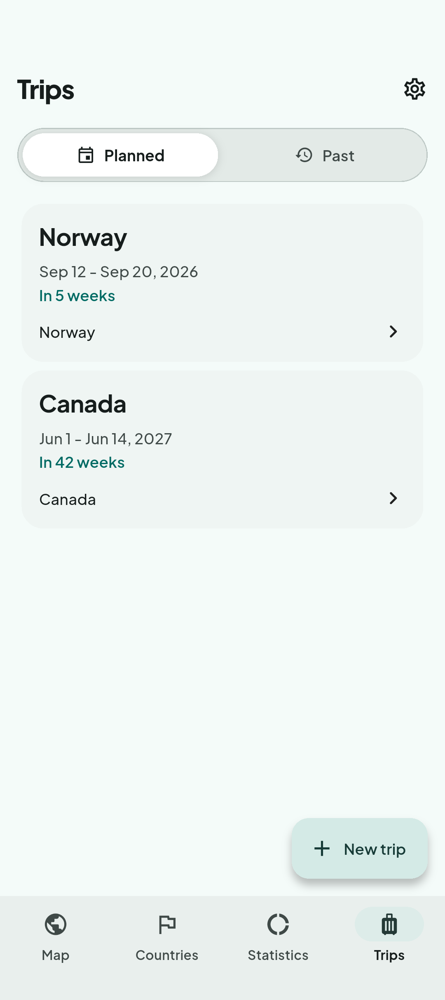
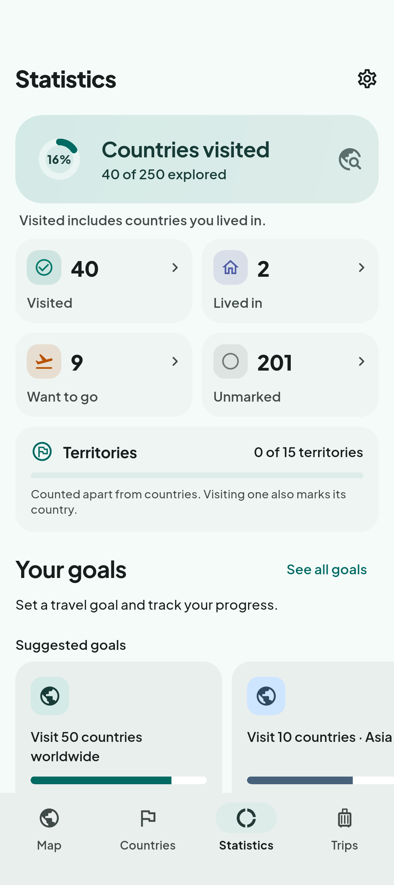

A LITTLE MORE OF THE WORLD
Your travels.
Your memories.
Your world map.
The places you’ve been. The cities that felt like home. The next trip you can’t stop thinking about. Keep them together with Worldpath.
Take a look inside- Works offline
- No account needed
- English & German

WORLDPATH
Every journey leaves a little colour.
Mark countries, cities, and selected territories as visited, lived in, or want to go. Make your map a reflection of your travels.
- Visited
- Lived in
- Want to go

THE NEXT ADVENTURE, AND THE LAST
Keep your trips
together.
A weekend away or a journey across countries. Bring your stops, dates, and transport together, with separate places for planned and past trips.
Make a plan. Mark it as taken when you return. Watch your map catch up with your memories.

SEE THE BIGGER PICTURE
Watch your
world grow.
Look back at your travels with country totals, regional progress, and a timeline. Set a personal goal or gather your favourite places into a collection.
There’s always another corner of the world to discover.
READY WHEN YOU ARE
Where will your
Worldpath take you?
Your travel records stay on your device. Explore offline, save a local backup, and pick up where you left off.
Worldpath on Google Play